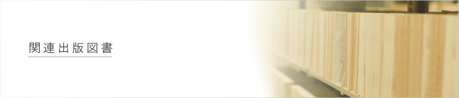

TOP > 関連出版図書

| 平成25年 | 「現代に生きる歎異抄」松田正典著（法蔵館） |
|---|---|
| 平成23年 |
「親鸞に学ぶ信心と救い」本多弘之著（法蔵館） 「龍樹の仏教－十住毘婆沙論－」細川 巌著（ちくま学芸文庫） |
| 平成20年 | 「親鸞に学ぶ人生の生き方」信楽峻麿著（法蔵館）（創立9０周年記念事業として） |
| 平成19年 | 「真実に遇う大地」松田正典著（法蔵館、聞法ブックス） |
| 平成13年 | 「生きるための歎異抄」松田正典著（法蔵館、聞法ブックス） |
| 平成10年 | 「信は人に就く－唯信鈔文意に聞く－」細川 巌著（法蔵館）（創立８０周年記念事業として） |
| 平成 7年 | 「平和と教育」松田正典著（東本願寺出版会） |
| 平成 6年 | 「晩年の親鸞」細川 巌著（法蔵館） |
| 平成 4年 | 「十住毘婆沙論－龍樹の仏教－」細川 巌著（法蔵館） |
| 平成 3年 | 「いのちの伝承－若者に語る仏教－」松田正典著（法蔵館） |
| 昭和56年 | 「現代と仏教との対話」内海 巌編（東海大学出版会） |